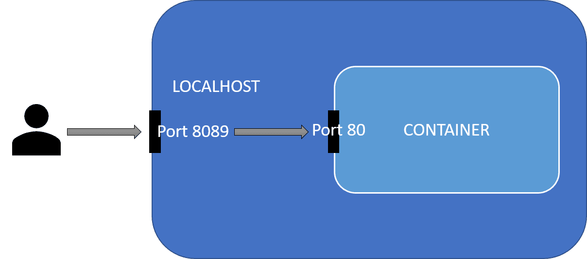

Docker🐋
Docker jest jednym z najpopularniejszych obecnie systemów do wirtualizacji systemu operacyjnego.
Pozwala w prosty sposób stworzyć instancję systemu będącą niemalże zupełnie niezależnym bytem od systemu maszyny na której się znajduje, może mieć ona zainstalowane zupełnie inne oprogramowanie, różnić się konfiguracją sieciową etc.
Różni się on od zwyczajnej maszyny wirtualnej tym, że taki kontener jest dużo bardziej elastyczny od maszyny wirtualnej, ponieważ nie ma na stałe przydzielonych zasobów takich jak RAM, CPU etc.
Docker często jest wykorzystywany do pracy z różnorodnym oprogramowaniem bez niepotrzebnego zaśmiecania środowiska deweloperskiego. Jest to także jeden ze sposobów uniknięcia piekła zależności.
Podstawowe Pojęcia
Obraz/Image - obrazy dockerowe są już gotowymi, wcześniej przygotowanymi paczkami zawierające systemy w dockerze. Przykładem obrazu jest ubuntu:latest.
Kontener/Container - jest to uruchomiona instancja naszego dockera bazująca na danym obrazie. Zawiera on konfigurację oraz wszystkie dane unikalne dla danej instancji.
Repozytorium - miejsce z którego pobierane są obrazy oraz ich aktualizacje. Jest to dockerhub, ale można też pobierać z innych repozytoriów (np z gitlaba).
Obsługa
Mamy kilka grup komend
| Grupa | Opis |
|---|---|
| config | Zarządzanie konfiguracją |
| container | Operacje na kontenerach |
| context | Contexts for distributed deployment (k8s, …) |
| image | Zarządzanie obrazami |
| network | Zarządzanie siecią |
| service | Service (i.e. multiple containers that run the same image) management in distributed deployments (e.g.with docker-compose or docker swarm) |
| system | Global management |
| volume | Secondary storage management |
Do zarządzania możemy też używać apek GUI, albo pluginów do IDE.
Zarządzanie obrazami
Do zarządzania obrazami na naszej maszynie służy polecenie docker image.
Nowy obraz
Baza
W większości wypadków warto wykorzystywać obrazy znajdujące się na stronie hub.docker.com - zawiera ona zarówno obrazy większości dystrybucji Linuxa, jak i obrazy z systemami zawierające już przygotowane narzędzia deweloperskie (np obrazy zawierające zainstalowane i skonfigurowane bazy danych).
Aby pobrać taki obraz na naszą maszynę należy użyć komendy:
docker image pull [OPTIONS] NAME[:TAG|@DIGEST]
Na przykład:
docker image pull alpine:latest # pobiera najnowszy obraz systemu alpine
Budowanie z konfiguracji
Jeśli potrzebujemy stworzyć własny obraz to możemy go samodzielnie zbudować za pomocą komendy:
docker image build .
Pozwala ona zbudować nam własny obraz dockerowy na bazie pliku dockerfile. (Opis składni)
Stworzenie poprzez commita
Do wygenerowania nowego obrazu możemy też wykorzystać już istniejący kontener, wystarczy użyć komendy commit
docker commit containerName ImageName
Zarządzanie posiadanymi obrazami
Za pomocy komendy docker image ls możemy łatwo wypisać lokalnie pobrane obrazy.
docker image ls
REPOSITORY TAG IMAGE ID CREATED SIZE
<none> <none> 93c4e800ab68 2 weeks ago 677MB
postgres 11-alpine ec1e25ef56d1 5 weeks ago 156MB
alpine latest 6dbb9cc54074 5 weeks ago 5.61MB
nginx 1.19.0-alpine 7d0cdcc60a96 11 months ago 21.3MB
docker image rm usuwa dany obraz.
docker image rm [OPTIONS] IMAGE [IMAGE...]
Ale do czyszczenia jednak lepsze jest docker image prune, które usuwa wszystkie "wiszące" (dangling) obrazy, czyli np stare kopie obrazów, które zostały już przebudowane (na liście obrazów podpisane są jako <none>).
Dodanie flagi -a usuwa także wszystkie obrazy, które są nie są używane przez żadne kontenery.
$ docker image prune -a
WARNING! This will remove all images without at least one container associated to them.
Are you sure you want to continue? [y/N] y
Deleted Images:
untagged: alpine:latest
Przenoszenie obrazów
Możliwe jest także zapisywanie istniejących obrazów do plików .tar.
Dzięki temu można je wczytywać na maszynach pozbawionych dostęþu do sieci.
docker save -o <path for generated tar file> <image name>
#na przykład
docker save -o ./image.tar ubuntu:20
Wczytuje się analogicznie
docker load -i <path to image tar file>
Zarządzanie kontenerami
docker container ls - wypisuje kontenery obecnie uruchomione w systemie, dodanie flagi -a sprawia, że pokazuje także te wyłączone.
$ docker container ls -a
CONTAINER ID IMAGE COMMAND CREATED STATUS PORTS NAMES
bd1415cdc985 server_nginx "/docker-entrypoint.…" 25 hours ago Exited(0) 24 hours ago server_nginx_1
2474e0650b34 registry.gitlab.com/toolkit/server:latest "sh -c 'python manag…" 25 hours ago Exited(0) 25 hours ago server_web_1
ce6a641e20c1 postgres:11-alpine "docker-entrypoint.s…" 2 weeks ago Exited(0) 21 hours ago server_db_1
Uruchamianie
Do podstawowej pracy z kontenerem możemy używać komend:
docker container runalbo teżdocker rundocker container createdocker container pause/unpause- wstrzymuje (i wznawia) procesy w kontenerzedocker container start/stop- zabija wszystkie procesy w kontenerze i go zamykadocker container restartdocker commit containerName ImageName-zapisujemy zmiany wprowadzone w danym kontenerze jako nowy obraz
Do usuwania kontenerów służą docker container prune i docker container rm.
docker container create [OPTIONS] IMAGE [COMMAND] [ARG...] - tworzy nam nowy kontener bazujący na danym obrazie, możemy także wybrać jaka komenda ma zostać w nim uruchomiona. (ale go nie uruchamia)
Możemy go potem uruchomić komendą docker container start ID.
Do stworzenia nowego kontenera i natychmiastowego uruchomienia służy docker container run.
Przydatne flagi dla docker run [flagi] nazwa-obrazu:
-rmusuwa kontener po zakończeniu pracy-i,--interactivepo odpaleniu nadal mamy podłączone STDIN-t,--ttyPodłączamy się terminalem do kontenera (warto użyć razem z-i)-d,--detachUruchom kontener w tle i wypisz jego ID-e,--envJakie zmienne środowiskowe mają być w naszym kontenerze (npdocker run -e BROKER_PORT=9999 client)-p,--publishudostępnij wewnętrzne porty obrazu na portach hosta np-p 8089:80wystawia port 80 z wnętrza kontenera na porcie 8089 hosta. (możemy teraz na naszej maszynie otworzyć to pod adresem localhost:8089)
-v,--volumeokreśla jakie pliki/foldery z hosta mamy udostępnić kontenerowi i pod jakimi adresami np-v /tmp/logs.log:/tmp/runlogsprawi że apka w kontenerze pisząc do plików w folderzetmp/runlog/będzie tak na prawdę pisać do folderu/tmp/logs.log/na hoście.--rm- usuwa kontener po zakończeniu--device- pozwala na udostępnienie urządzeń kontenerowi dockerowemu (np. kamery)--device=/dev/video0:/dev/video0link--usersłuży do ustawiania użytkownika oraz wartości userid (format:<name|uid>[:<group|gid>]) np.--user=$(id -u):$(id -g)ustawia uid oraz gid uzytkownika wewnątrz dockera na ten sam co ma użytkownik na hoście (moze to pomóc uniknąć problemów z uprawnieniami do plików)
docker container run -i -t ubuntu bash
Interakcje z działającym kontenerem
attach - podpinanie stdin i stdouta to działającego kontenera.
docker attach [OPTIONS] CONTAINER lub docker container attach
cp - kopiowanie plików
exec - uruchom w już działającym kontenerze. Bardzo przydatne gdy chcemy np wejść tam z shellem.
docker exec [OPTIONS] CONTAINER COMMAND [ARG...] lub docker container exec ...
docker exec -it worker bash #-it podpina input i output
Zarządzanie wolumenami
Ręczne tworzenie volume
Czasami może pojawić się potrzeba ręcznego tworzenia wolumenów. link
docker volume create [OPTIONS] [VOLUME]
Jedną z przydatnych opcji w takim wariancie jest stworzenie go w konkretnym folderze.
docker volume create --opt type=none --opt o=bind --opt device=/data/volumes/testvol testvol
Korzystamy wtedy z flag:
--driver- określa jakiego sterownika użyć, domyślnie użwany jestlocal--opt- pozwala na przekazanie dodatkowych opcji sterownika (odpowiadają one opcjom komendy mount)typeokreśla typ wolumenudeviceokreśla miejsce na dysku, które ma być zmapowane na ten wolumen (ten folder musi już istnieć)
Usuwanie
docker volume rm testvol
Składnia pliku dockerfile
Plik dockerfile opisuje kolejne operacje pokazujące, jak powinien być zbudowany nasz obraz.
Przykładowy plik dockerfile:
# wybierz obraz bazowy od którego zaczynasz konstruowanie
FROM ubuntu:latest
# Ustaw zmienne środowiskowe
ENV APP_USER=user
# Wykonaj daną komendę, np zainstaluj potrzebne pakiety etc.
RUN apt install -y firefox
# określ położenie folderu roboczego w którym odpalane są komendy
WORKDIR /home/user
# Kopiuj pliki z hosta do systemu plików wewnątrz kontenera
COPY ./plik /home/user/
Tak zdefiniowany obraz budujemy komendą docker build ./sciezka/folderu.
Każda nowa linia/polecenie zaczyna się od komendy DUŻYMI_LITERAMI (taka konwencja).
Komendy:
FROM imageBaseto jest zawsze pierwsza instrukcja pokazująca na jakim innym obrazie ma bazować nasz nowy obrazRUN commandwykonuje komendy w powłoce kontenera przy budowaniuENV variable valueustawia wartości w środowisku (mogą być używane przez wszystko co będzie od teraz chodzić w kontenerze)COPY source destinationkopiuje pliki ze źródła (URL, plik, folder) do miejsca w kontenerze (UWAGA! z przycyn bezpieczeństwa pozwala on tylko na kopie rzeczy tylko z folderu w którym uruchamiamy komendę, czyli nie możemy np skopiować sobie czegoś z katalogu/home/jkowalski/pobrane)ADD source destinationto samo coADDz różnicą, że gdy potrafi zorpakować archiwum, gdy jest ono podane jako plikWORKDIR pathokreśla folder roboczy w którym mają się wykonywać pozostałe komendy jakRUN,CMD,ENTRYPOINTCMD command arg1 arg2 ...dostarcza domyślnych komend i wartości argumentów, które zostaną uruchomione w kontenerzeENTRYPOINT command arg1 arg2 ...uruchamia tą komendę, kiedy kontener jest uruchamiany (kontener jest zamykany kiedy ta komenda się kończy)EXPOSE portpokazuje na jakim porcie słucha kontaner, sama go nie wystawia, pełni raczej funkcję informacyjną dla użytkownika linkVOLUMEpozwala kontenerowi podłączyć się do innego systemu plików więcej infoHEALTHCHECKpozwala na sprawdzanie czy kontener jest gotowy do pracy linkHEALTHCHECK --interval=5m --timeout=3s \ CMD curl -f http://localhost/ || exit 1
Uwaga - w pliku dockerowym może być tylko jeden CMD albo ENTRYPOINT, jak nie to tylko ENTRYPOINT jest używany (na ogół).
ENTRYPOINT i CMD
ENTRYPOINT ma 2 warianty
- bazujący na samej komendzie
ENTRYPOINT node app.js 9000 9001
- używany razem z CMD
ENTRYPOINT ["/bin/node","app.js"]
CMD ["9000","9001"]
I możemy to potem odpalić tak
docker build -t app
docker run app
docker run app 5555 5556 # gdy chcemy użyć własnych argumentów
Możliwe jest też ustawienie własnego entrypointa przy uruchomieniu.
# Executes bash -c "ls /"
docker run --entrypoint bash my-image:latest -c "ls /"
Docker compose
Jest on wykorzystywany, kiedy potrzebujemy uruchomić wiele aplikacji, które będą się ze sobą komunikować (a odpalenie w dockerze skryptu, który wszystko nam poodpala nie jest opcją).
Quick start
Wyobraźmy sobie, że potrzebujemy 3 apek, które gadają ze sobą.
Tworzymy plik docker-compose.yml
version: '2'
services:
#Każdy z serwisów jest tutaj oddzielony
cli:
image: client #obraz z którego korzystamy
build: ./client/
links:
- bro
environment:
- BROKER_HOST=bro
- BROKER_PORT=9998
wor:
image: worker
build: ./worker/
links:
- bro
environment:
- BROKER_HOST=bro
- BROKER_PORT=9999
bro:
image: broker
build: ./broker/
# z wnętrza kontenera bro wystawiamy porty 9998 i 9999 aby inne
# kontenery w composie mogły się do nich podpiąć (ale maszyna hosta nie)
expose:
- "9998“
- "9999"
I uruchamiamy komendę docker-compose up -d, która:
- Buduje wszystkie wymagane obrazy (jeśli ich nie mamy)
- Uruchamia kolejne instancje każdego z nich w odpowiedniej kolejności
Do wyłączenia tego, co uruchomiliśmy wystarczy komenda docker-compose down
Plik konfiguracyjny
//TODO opisz dokładniej syntax docker-compose na podstawie pliku tsr-ud04-eng-DockerReferenceDocs2122.pdf oraz https://docs.docker.com/compose/compose-file/
Plik docker-compose.yml służy do zdefiniowania całych grup kontenerów, która mają być odpalone razem na jednej maszynie (pełna dokumentacja).Zawiera on opisy kolejno:
- serwisów (
services:) - czyli poszczególnych obrazów dockerowych, które mają tworzyć całość (to jedyna obowiązkowa część, pozostałe są opcjonalne) - sieci (
networks) - czyli poszczególnych sieci - woluminów (
volumes) - trwałych miejsc do przechowywania plików - sekretów (
secrets) - konfiguracji (
configs)
Przykładowy docker compose
services:
frontend:
image: awesome/webapp
ports:
- "443:8043"
networks:
- front-tier
- back-tier
configs:
- httpd-config
secrets:
- server-certificate
backend:
image: awesome/database
volumes:
- db-data:/etc/data
networks:
- back-tier
volumes:
db-data:
driver: flocker
driver_opts:
size: "10GiB"
configs:
httpd-config:
external: true
secrets:
server-certificate:
external: true
networks:
# The presence of these objects is sufficient to define them
front-tier: {}
back-tier: {}
Serwisy
Podstawowe parametry dla serwisów dokumentacja:
image- obraz, którego ma używać dany serwisexpose- lista portów, które mają być udostępnione innym serwisom wewnątrz dockera (host ich nie widzi)ports- lista portów wystawionych na zewnątrz dockera (są one także dostępne dla innych serwisów w dockerze)depends_on- lista serwisów, które muszą zostać wystartowane przed uruchomieniem tego serwisu (zastępuje on min przestarzałe polelinks). Domyślnie ustawia on tylko kolejność startowania, ale nie sprawdza czy serwis jest już gotowy do pracy. W celu zapewnienia uruchomienia w odpowiednim momencie można użyć polacondition(wartości toservice_healthy,service_startedlubservice_completed_successfully).services: web: build: . depends_on: redis: condition: service_healthy redis: image: redis healthcheck: xxxxxxxhealthcheck- pozwala na sprawdzenie czy serwis jest gotowy do pracy (np. czy baza danych jest już dostępna). Można go zdefiniować także w pliku Dockerfileenvironment- lista zmiennych środowiskowych w danym kontenerzebuild- ścieżka do folderu z plikiemDockerfile, aby go zbudować, gdyby jeszcze nie było odpowiedniego obrazu
//TODO dopisz przykłady
Inne parametry dla serwisów:
extra_hosts- lista mapowań adresów na nazwy (pojawią się w pliku/etc/hostsna maszynie) link. Najbardziej użytecznym mapowaniem może być tutaj mapowaniehost-gateway, które mapuje adres maszyny na której stoi docker.
extra_hosts:
- "somehost:162.242.195.82"
- "innyhost.local:50.31.209.229"
- "host.docker.internal:host-gateway"
Wolumeny
Za ich pomocą możemy tworzyć trwałe miejsca do przechowywania danych. Trwałych, czyli takich, które nie ulegają skasowaniu, kiedy usuwany jest kontener.
Dlatego często są one wykorzystywane min. do przechowywania baz danych, abyśmy nic nie tracili wtdy, kiedy np. przy aktualizacji będziemy chcieli zmienić wersję kontenera na świeższą.
Kolejną zaletą wolumenów w kontekście compose'a jest to, że mogą one być współdzielone pomiędzy poszczególnymi serwisami. dokumentacja
Składnia podawania wolumenów: VOLUME:CONTAINER_PATH[:ACCESS_MODE] source
Przykład:
services:
backend:
image: awesome/database
volumes:
- db-data:/etc/data
#db-data będzie zamontowane w backendzie pod ścieżką /etc/data
backup:
image: backup-service
volumes:
- db-data:/var/lib/backup/data
#db-data to automatycznie zdefioniowany wolumen
#system stworzy go sobie najpewniej w lokacji /var/lib/docker
volumes:
db-data:
Uruchamiając docker compose up docker tworzy wolument jeśli jeszcze nie istnieje.
Warto tytaj wiedzieć o atrybutach takich jak:
external(true, false) - określa, czy ten wolumen jest zarządzany poza danym serwerem. Jeśli ustawiony natrueto wszystkie pozostałe flagi są ignorowane (za wyjątkiem name). Jeśli taki wolumen nie istnieje to zwracany jest błąd, jeśli istnieje to jest on podłączany.volumes: db-data: external: true #szukamy czy volume o nazwie db-data istniejedriver_opts- pozwala na zamontowanie wolumentu za pomocą jakiegoś sterownika. Pozwala np. na stworzenie wolumenu znajdującego się na serwerze NFSlub zwyczajne określenie na jaki folder hosta ma być on zmapowanyvolumes: example: driver_opts: type: "nfs" o: "addr=10.40.0.199,nolock,soft,rw" device: ":/docker/example"volumes: cvat_share: driver_opts: type: none device: /mnt/duzy_dysk/pliki_dla_cvata/ o: bind
Wykorzystanie zmiennych środowiskowych
W ramach docker-compose możemy korzystać z zmiennych środowiskowych, które są zdefiniowane w pliku .env znajdującym się w tym samym folderze co plik docker-compose.yml. Może także korzystać ze zmiennych systemowych. link
Przykład pliku .env:
POSTGRES_USER=postgres
POSTGRES_PASSWORD=postgres
Aby skorzystać z tych zmiennych w pliku docker-compose.yml wystarczy użyć składni ${}. Możemy też użyć domyślnych wartości, które są ustawiane w przypadku braku zmiennej.
services:
db:
image: postgres
environment:
POSTGRES_USER: ${POSTGRES_USER}
POSTGRES_PASSWORD: ${POSTGRES_PASSWORD}
POSTGRES_DB: ${POSTGRES_DB:-postgres}
Składnia podstawień:
${VAR}- podstawia wartość zmiennejVAR${VAR:-default}- podstawia wartość zmiennejVAR, jeśli jest ustawiona i nie jest pusta, w przeciwnym wypadku podstawia wartośćdefault${VAR-default}- podstawia wartość zmiennejVAR, jeśli jest ustawiona, w przeciwnym wypadku podstawia wartośćdefault${VAR:?error message}- JeśliVARnie jest ustawiona lub jest pusta to wypisujeerror messagei kończy działanie compose'a${VAR+replacement}- podstawia wartośćreplacementjeśliVARjest ustawiona, w przeciwnym wypadku zostawia puste
inne
//TODO opisz pozostałe
Komendy
UWAGA wkrótce komenda docker-ckompose powinna zostać zmieniona na docker compose link
docker-compose up -
Parametry:
--scale service=numpozwala odpalić więcej instancji danego serwisu (jednak gdy skalujemy serwisy, które wystawiają portyexposeto tylko jedna z instancji będzie widoczna dla innych) //TODO sprawdź to-d-//TODO-f- flaga do uruchamiania wielu plików docker compose jednocześnie Jeśli wszystkie wysecyfikowane pliki znajdują się w tym samym folderze wtedy docker łączy je w jedną wspólną konfigurację. przykład apki z wtórej w dodatkowym pliku jest dodane szyfrowanie HTTPS:docker compose -f docker-compose.yml -f docker-compose.https.yml up -d
docker-compose down - zatrzymuje i usuwa kontenery z danego compose'a
docker compose stop - zatrzymuje, ale bez usuwania
docker compose start - uruchamia istniejące kontenery dla serwisu
Przydatne snippety
Tworzenie użytkownika
RUN useradd -ms /bin/bash -G sudo,inna_grupa dockeruser
#Wyłączenie promptu o hasło przy sudo
RUN echo "dockeruser ALL=(ALL) NOPASSWD: ALL" > /etc/sudoers.d/ubuntu
#ustawienie kolorowego terminala
ENV TERM=xterm-256color
#przełączenie na użytkownika przy dalszych komendach
USER dockeruser
WORKDIR /home/dockeruser
Uruchamianie z dostępem do GUI
W wypadku aplikacji dockerowych możliwe jest ich uruchamianie aplikacji GUI z ich poziomu.
Wymaga to najpierw nadania uprawnień do otwierania okien
xhost +local: #Ta opcja jest aktywna do restartu komputera
Poza tym należy dać dockerowi dostęp do odpowiedniego gniazda oraz ustawić zmienną DISPLAY
docker run -it --rm -v /tmp/.X11-unix:/tmp/.X11-unix -e DISPLAY=$DISPLAY ubuntu bash
Do przetestowania działania całości warto użyć aplikacji xeyes znajdującą się w pakiecie x11-apps dla Ubuntu. W wypadku problemów warto dodać opcję --ipc=host.
Jeśli ta metoda nie zadziała (na Waylandzie mogą być problemy) warto rozwazyć użycie https://github.com/mviereck/x11docker .
Sprawdzanie rozmiaru dockera i ogólne czyszczenie
Aby otrzymać podsumowanie elementów dockerowych znajdujących się w systemie należy użyć komendy df
$ docker system df
TYPE TOTAL ACTIVE SIZE RECLAIMABLE
Images 16 16 34.44GB 6.447GB (18%)
Containers 23 23 146.5MB 0B (0%)
Local Volumes 18 14 806.6GB 2.222MB (0%)
Build Cache 116 0 0B 0B
Aby otrzymać konkretną listę trzeba dodać flagę -v.
Do czyszczenia można użyć następujących komend
docker container prune #usuwa wyłączone kontenery
docker image prune #usuwa obrazy, do których nie ma przypisanych tagów
docker builder prune #czyści build cache
Przenoszenie danych dockerowych
Domyślnie Docker przechowuje dane takie jak obrazy w folderze /var/lib/docker/ w niektórych wypadkach warto zmienić to położenie na jakichś zewnętrzby dysk.
Aby to zmienić należy to ustawić za pomocą pola data-root w pliku /etc/docker/daemon.json. link do stacka, Link do tutorialu o tym
Kroki:
- Edytuj
/etc/docker/daemon.json - Wyłącz dockera
sudo systemctl stop dockeri sprawdź czy już go nie maps aux | grep -i docker | grep -v grep - (opcjonalnie) Skopiuj obecne pliki dockera:
sudo rsync -axPS /var/lib/docker/ /new/path/to/docker-data - Uruchom ponownie
sudo systemctl start docker - Sprawdź położenie
docker info | grep 'Docker Root Dir' - Usuń stare pliki
sudo rm -r /var/lib/docker